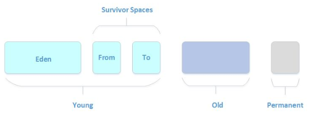
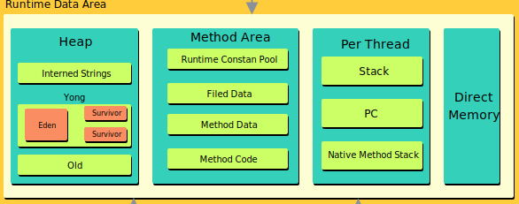

JVM内存分代
Java虚拟机将堆内存划分为新生代、老年代和永久代
永久代是HotSpot虚拟机特有的概念，它采用永久代的方式来实现方法区，其他的虚拟机实现没有这一概念，而且HotSpot也有取消永久代的趋势，在JDK 1.7中HotSpot已经开始了“去永久化”，把原本放在永久代的字符串常量池移出。永久代主要存放常量、类信息、静态变量等数据，与垃圾回收关系不大，新生代和老年代是垃圾回收的主要区域。

Java 8的内存分代改进
java8 内存分代改进：将常量池从PermGen剥离到heap中，将元数据从PermGen剥离到元数据区。
java7 之前 intern的String被存储在永久代。永久代PermGen区 使用-XX:MaxPermSize=N来设置最大大小，由于应用程序string.intern通常是不可预测和不可控的，因此不好设置这个大小。但设置不好，常常会引起： java.lang.OutOfMemoryError: PermGen space。 java7 将字符串常量池从永久代移除，改为在堆中实现，字符串常量池被限制在整个应用的堆内存中，在运行时调用String.intern()增加字符串常量不会使永久代OOM了。 java8的时候去除PermGen，将其中的方法区移到non-heap中的Metaspace, Metaspace与PermGen之间最大的区别在于：Metaspace并不在虚拟机中，而是使用本地内存。Metaspace相关参数
-XX:MetaspaceSize，初始空间大小，达到该值就会触发垃圾收集进行类型卸载，同时GC会对该值进行调整：如果释放了大量的空间，就适当降低该值；如果释放了很少的空间，那么在不超过MaxMetaspaceSize时，适当提高该值。
-XX:MaxMetaspaceSize，最大空间，默认是没有限制的。
-XX:MinMetaspaceFreeRatio，在GC之后，最小的Metaspace剩余空间容量的百分比，减少为分配空间所导致的垃圾收集
-XX:MaxMetaspaceFreeRatio，在GC之后，最大的Metaspace剩余空间容量的百分比，减少为释放空间所导致的垃圾收集
如果没有使用-XX:MaxMetaspaceSize来设置类的元数据的大小，其最大可利用空间是整个系统内存的可用空间。JVM也可以增加本地内存空间来满足类元数据信息的存储。也可能由于存在bug，导致Metaspace的空间在不停的扩展，会导致机器的内存不足；进而可能出现swap内存被耗尽；最终导致进程直接被系统直接kill掉。
运行时数据区
运行时数据区用于保存 JVM 在运行过程中产生的数据，结构如图所示：

Heap
Java 堆是可供各线程共享的运行时内存区域，是 Java 虚拟机所管理的内存区域中最大的一块。此区域非常重要，几乎所有的对象实例和数组实例都要在 Java 堆上分配，但随着 JIT 编译器及逃逸分析技术的发展，也可能会被优化为栈上分配。
Heap 中除了作为对象分配使用，还包含字符串字面量 常量池（Internd Strings） 。 除此之外 Heap 中还包含一个 新生代（Yong Generation）、一个 老年代（Old Generation）。
新生代分三个区，一个Eden区，两个Survivor区，大部分对象在Eden区中生成。Survivor 区总有一个是空的。
老年代中保存一些生命周期较长的对象，当一个对象经过多次的 GC 后还没有被回收，那么它将被移动到老年代。
Methoad Area
方法区的数据由所有线程共享，因此为安全的使用方法区的数据，需要注意线程安全问题。
方法区主要保存类级别的数据，包括：
- ClassLoader Reference
- Runtime Constant Pool
- 数字常量
- 类属性引用
- 方法引用
- Field Data：每个类属性的名称、类型等
- Methoad Data：每个方法的名称、返回值类型、参数列表等
- Methoad Code：每个方法的字节码、本地变量表等
方法区的实现在不同的 JVM 版本有不同，在 JVM 1.8 之前，方法区的实现为 永久代（PermGen），但是由于永久代的大小限制， 经常会出现内存溢出。于是在 JVM 1.8 方法区的实现改为 元空间（Metaspace），元空间是在 Native 的一块内存空间。
Stack
对于每个 JVM 线程，当线程启动时，都会分配一个独立的运行时栈，用以保存方法调用。每个方法调用，都会在栈顶增加一个栈帧（Stack Frame）。
每个栈帧都保存三个引用：本地变量表（Local Variable Array）、 操作数栈（Operand Stack） 和 当前方法所属类的运行时常量池（Runtime Constant Pool）。由于本地变量表和操作数栈的大小都在编译时确定，所以栈帧的大小是固定的。
当被调用的方法返回或抛出异常，栈帧会被弹出。在抛出异常时 printStackTrace() 打印的每一行就是一个栈帧。同时得益于栈帧的特点，栈帧内的数据是线程安全的。
栈的大小可以动态扩展，但是如果一个线程需要的栈大小超过了允许的大小，就会抛出 StackOverflowError。
PC Register
对于每个 JVM 线程，当线程启动时，都会有一个独立的 PC（Program Counter） 计数器，用来保存当前执行的代码地址（方法区中的内存地址）。如果当前方法是 Native 方法，PC 的值为 NULL。一旦执行完成，PC 计数器会被更新为下一个需要执行代码的地址。
Native Method Stack
本地方法栈和 Java 虚拟机栈的作用相似，Java 虚拟机栈执行的是字节码，而本地方法栈执行的是 native 方法。本地方法栈使用传统的栈（C Stack）来支持 native 方法。
Direct Memory
在 JDK 1.4 中新加入了 NIO 类，它可以使用 Native 函数库直接分配堆外内存，然后通过一个存储在 Java 堆里的 DirectByteBuffer 对象作为这块内存的引用进行操作。这样能在一些场景中显著提高性能，因为 避免了在 Java 堆和 Native 堆中来回复制数据。